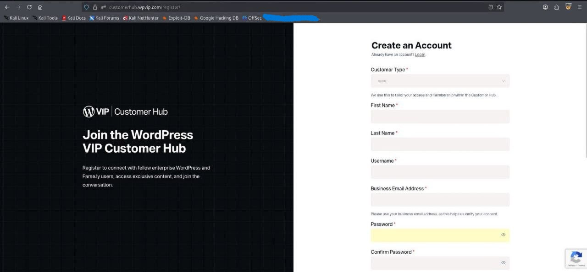
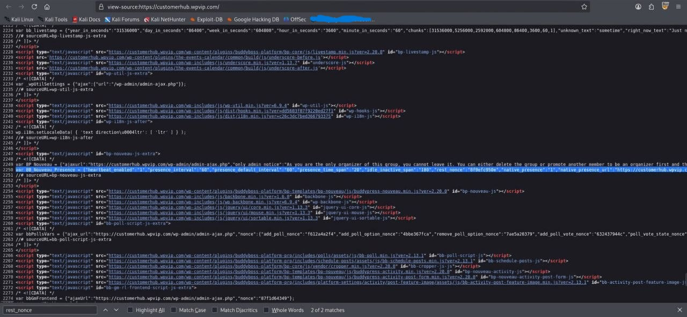
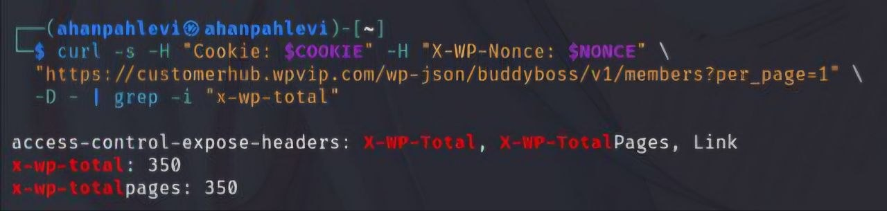
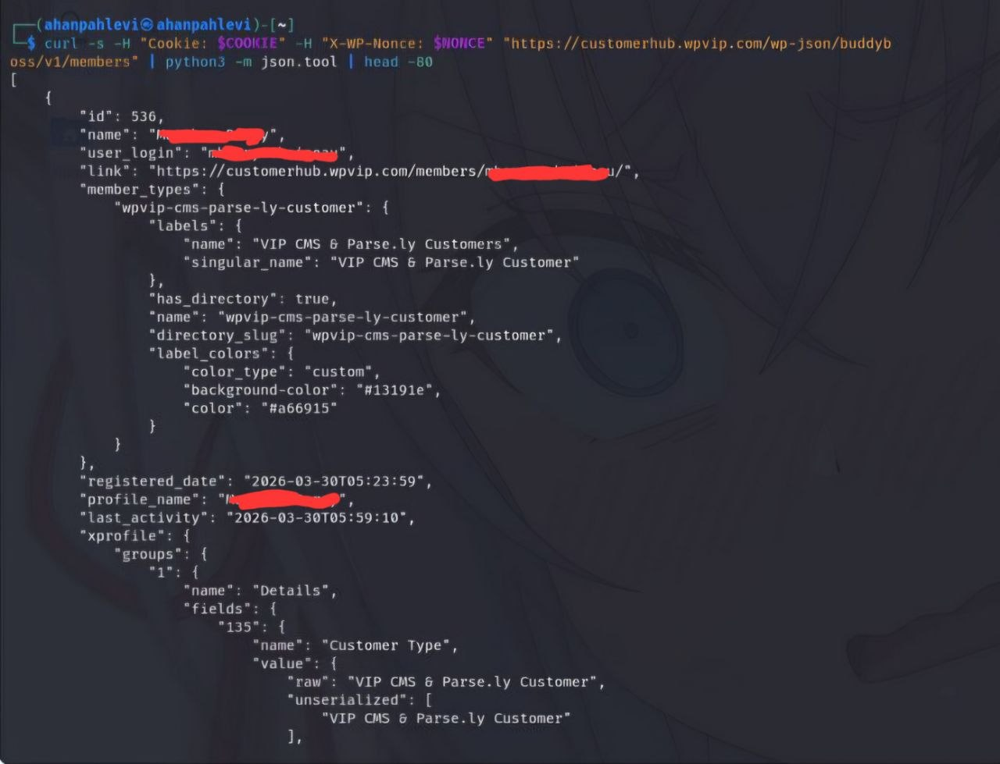

The Story
It started like any other recon session. Just me, a browser, and a WordPress site.
I was poking around customerhub.wpvip.com, the customer hub for WordPress VIP,
a premium managed WordPress hosting platform used by large enterprise companies.
I noticed the site was running BuddyBoss,
a popular plugin for building community and membership platforms. BuddyBoss registers its own
REST API routes under /wp-json/buddyboss/v1/ and that endpoint immediately caught
my attention. REST APIs are always interesting to poke at.
So I registered a basic account, waited for approval (about 1-2 business days), logged in, and started exploring what the API would give me.

Registration page, basic account, waiting for approval before accessing the hub
Finding the Vulnerability
First thing I tried was hitting the /members endpoint after authentication.
To do that I needed a valid REST API nonce, which WordPress conveniently embeds
right in the page source inside the BB_Nouveau_Presence JavaScript variable.
Easy to find, just Ctrl+U and search for "rest_nonce".

Found the rest_nonce value sitting inside BB_Nouveau_Presence in the page source
Once I had the nonce, I fired a simple authenticated GET request:
GET /wp-json/buddyboss/v1/members?per_page=100 HTTP/2
Host: customerhub.wpvip.com
Cookie: wordpress_logged_in_[hash]=[value]
X-WP-Nonce: [nonce_value]Server came back with HTTP 200 and the response body was packed with member data. Not just names. Full PII. Then I looked at the response headers and saw something that genuinely made me stop for a second:
x-wp-total: 350
x-wp-totalpages: 350
x-wp-total: 350, all enterprise customers fully enumerable by any basic account
350 enterprise customers. All enumerable. By anyone who could get a basic account approved. No special role, no admin access, just a freshly registered account and a nonce from the page source.
Proof of Concept
GET /wp-json/buddyboss/v1/members?per_page=100 HTTP/2
Host: customerhub.wpvip.com
Cookie: [attacker session]
X-WP-Nonce: [nonce]
--- Response ---
HTTP/2 200 OK
x-wp-total: 350
[
{
"id": [REDACTED],
"name": "[REDACTED]",
"user_login": "[REDACTED]",
"xprofile": {
"groups": {
"1": {
"fields": {
"1": {"name": "First Name", "value": {"raw": "[REDACTED]"}},
"2": {"name": "Last Name", "value": {"raw": "[REDACTED]"}},
"16": {"name": "Company", "value": {"raw": "[REDACTED]"}},
"10": {"name": "Role Category", "value": {"raw": "Developer"}},
"17": {"name": "Location", "value": {"raw": "[REDACTED]"}}
}
}
}
}
}
]
Full PII in the response, name, username, company, role, location. All redacted here.
Impact Analysis
This wasn't just "names and emails." These are enterprise customers, companies paying thousands per month for WordPress VIP. With one API call, anyone with a basic approved account could get full names, usernames, company names, job roles, locations, customer types, and last activity timestamps across all 350 members. That's a solid starting point for spear phishing, competitor intelligence, or just knowing who the high-value targets are.
The part that bothered me most is that users probably had no idea their data was queryable like this. They signed up for a customer hub, not a public directory.
The Response
I submitted the report to WordPress VIP's HackerOne program and waited a few days. Then I got this:
"Hi, Thanks for sending this in. This is a community directory and is supposed to show all this information / profiles of other members. This is not a security issue. All the best." - ehtis, WordPress VIP Triager
Marked as Informative, severity none.
Honestly I still disagree. A community directory is fine if users actually know their data is visible and agreed to it. But enterprise customers joining a customer hub probably don't expect their full name, job role, and company to be bulk-queryable via a REST API by any newly approved account. That gap between what users expect and what's actually happening is exactly the kind of thing that gets abused.
But that's bug bounty. Sometimes the program sees it differently. You take the L, write it up, and move on. 🤷
Suggested Remediation
Even if the program considers this working as intended, here's what I'd do to fix it properly.
Add role-based access control on /wp-json/buddyboss/v1/members and restrict it
to admins or specific authorized roles. Strip the sensitive xprofile fields from responses
for regular users. Add rate limiting so bulk enumeration isn't trivial. And give users
actual privacy controls so they can choose what's visible and what isn't.
Lessons Learned
Always check third-party plugin REST API endpoints. BuddyBoss, WooCommerce, LearnDash, these plugins register their own routes and the access controls are often way weaker than core WordPress. The/wp-json/directory is genuinely a goldmine. And response headers likex-wp-totalcan immediately tell you the scale of what you're looking at before you even read the body. Keep hunting.